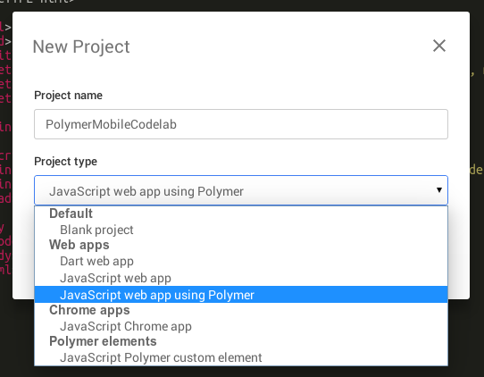

### On this page
Examples of the things you can do
### Side by side steps
Enter "PolymerMapsCodelab" as the Project name
In the Project type dropdown, select "JavaScript Web app using Polymer".

### Figures
Awesome caption
### Some code
function coolFunc() {
return true;
}
### Run button
### Summary
In this step you added an input field.
Along the way, you learned how to:
* Add an HTML element
* Register an event handler on an element
* Implement an event handler
In the next step, you add a button and
programmatically change its state.